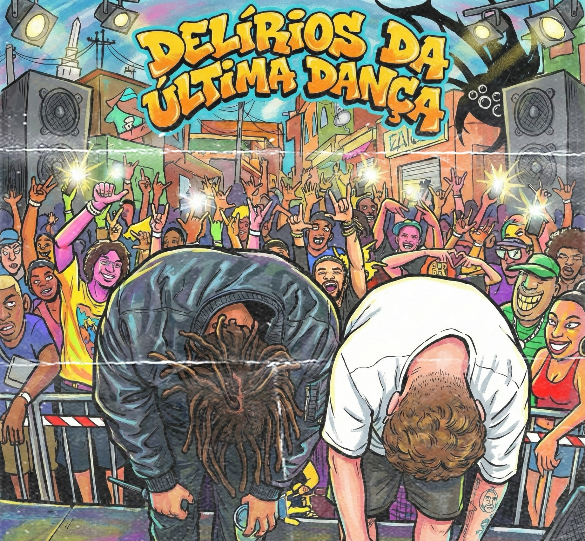
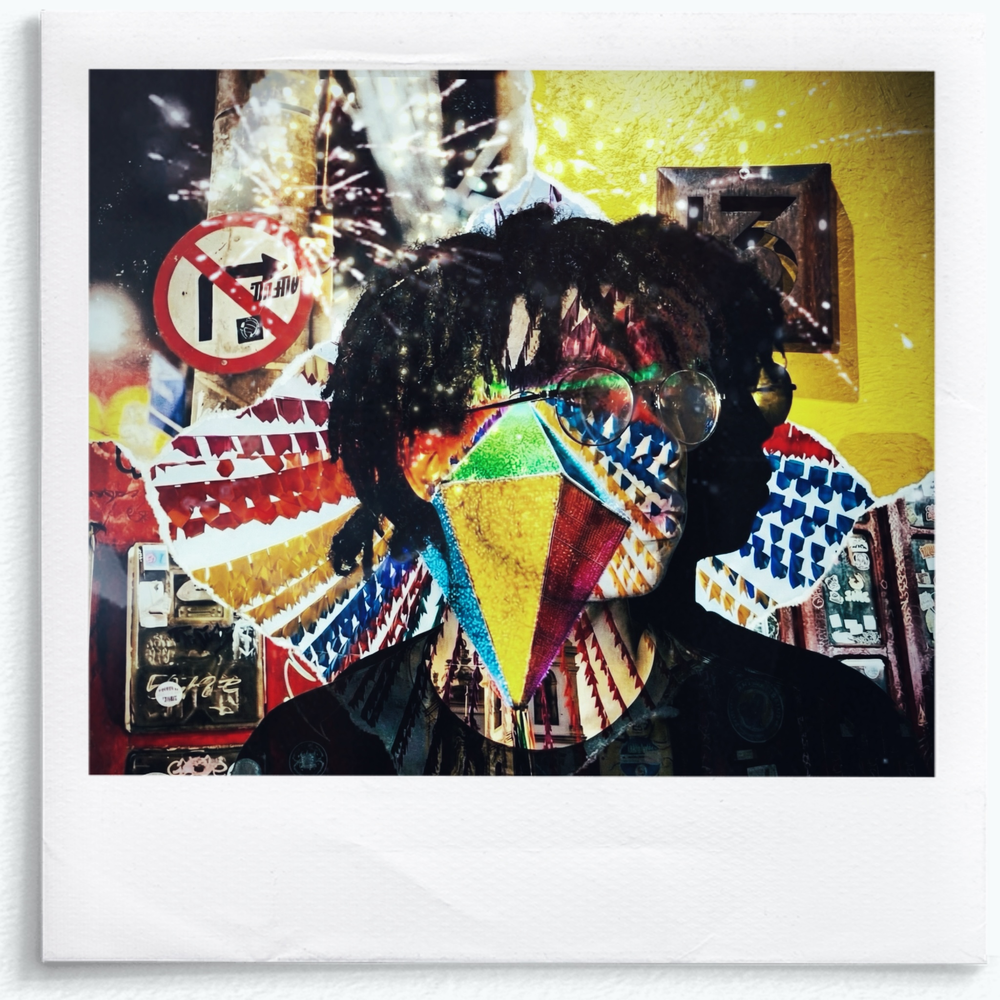

MY MUSIC TASTE

PLAY
Delírios da última dança
Puro suco da vibe de delírios

PLAY
pov: amar.mp3
"com a maioria dessas eu me identifico...".

PLAY
Baco Transições 🐻
. Nosso Baco na melhor das versões